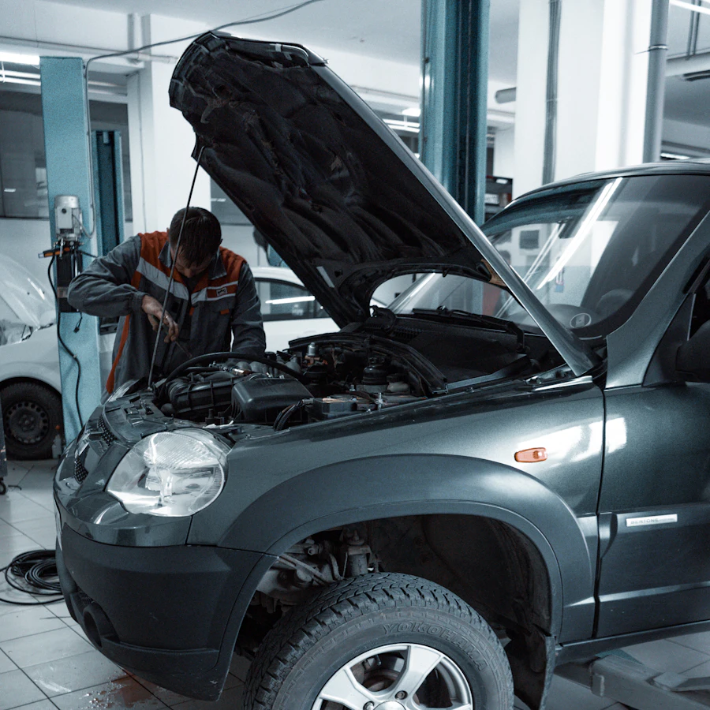

Pièces d'occasion vérifiées, de la casse au comptoir.
Une pièce d'occasion contrôlée coûte en général 40 à 70 % de moins que la même pièce neuve en concession. Chez P.A.C. à La Farlède, chaque pièce est démontée, contrôlée et référencée avant d'être proposée à la vente.
Ce que vous trouvez en occasion
- Mécanique : moteurs complets, boîtes de vitesses manuelles et automatiques, turbos, injecteurs, pompes.
- Électricité : alternateurs, démarreurs, calculateurs, faisceaux, compteurs.
- Carrosserie : portières, ailes, capots, pare-chocs, hayons, rétroviseurs.
- Éclairage : optiques avant, feux arrière, antibrouillards.
- Intérieur : sièges, sellerie, garnitures, commandes.
- Roues : jantes tôle et alliage.

Pourquoi l'occasion d'une casse professionnelle
Un véhicule hors d'usage contient des dizaines de pièces qui ont encore des années de service devant elles. Le rôle d'une casse automobile comme P.A.C. est de les identifier, de les démonter proprement et de les contrôler avant de les revendre. Résultat : vous payez la pièce, pas le marketing. C'est aussi le choix le plus écologique, puisqu'une pièce réutilisée est une pièce qui n'a pas besoin d'être fabriquée.
Depuis 2017, la loi française oblige d'ailleurs les garagistes à proposer des pièces issues de l'économie circulaire pour de nombreuses réparations (article L.224-67 du Code de la consommation). Les professionnels du Var qui s'approvisionnent chez P.A.C. le font depuis bien plus longtemps.
Comment vérifier une disponibilité
Le stock d'une casse change tous les jours. Appelez le 04 94 08 15 33 (lun–ven, 8h–12h et 14h–18h) avec votre carte grise sous les yeux : l'équipe identifie précisément votre véhicule, vérifie la pièce, annonce l'état et le prix, et la met de côté à votre nom.
Votre pièce est peut-être déjà sur l'étagère.
Un coup de fil suffit pour le savoir. Réponse immédiate pendant les horaires du comptoir.
